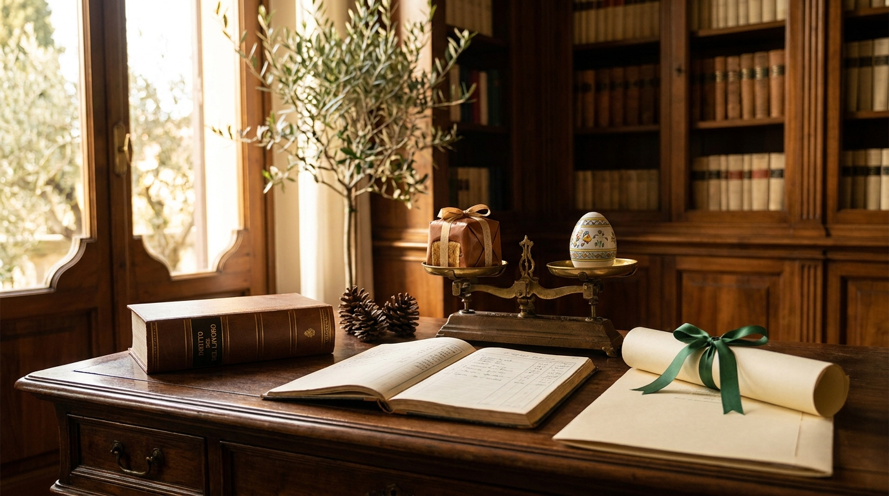

Supplenti scolastici: le vacanze di Natale e Pasqua valgono come ferie godute
Con l'ordinanza n. 18590/2026, la Cassazione chiarisce che per i docenti supplenti le sospensioni delle lezioni a Natale e Pasqua valgono come ferie godute. Conseguenza diretta: quei giorni non possono essere monetizzati a fine rapporto come ferie non fruite. Una pronuncia che incide sulle pretese economiche di molti precari della scuola.

Il caso
La controversia nasce da una richiesta ricorrente nel mondo della scuola: il supplente, al termine dell'incarico, chiede il pagamento delle ferie non godute. Tra queste, vengono spesso conteggiati i giorni di sospensione delle attività didattiche durante le vacanze natalizie e pasquali.
La Corte di Cassazione, Sezione Lavoro, con l'ordinanza n. 18590/2026 dell'11 giugno 2026, ha posto un punto fermo: durante le sospensioni delle lezioni il docente non presta servizio e, di fatto, fruisce delle ferie. Quei periodi, pertanto, si considerano già goduti e non danno diritto a indennità sostitutiva.
Inquadramento normativo
Il diritto alle ferie ha copertura costituzionale (art. 36, comma 3, Cost.) ed è irrinunciabile. La regola generale è che le ferie vanno effettivamente godute: l'indennità sostitutiva (la cosiddetta "monetizzazione") spetta solo quando il lavoratore non ha potuto fruirne per cause a lui non imputabili, tipicamente alla cessazione del rapporto.
Nel comparto scuola il calendario è scandito dalle sospensioni dell'attività didattica. La Cassazione muove dal principio – già affermato in precedenti pronunce – secondo cui per il personale docente le ferie coincidono di norma con i periodi di interruzione delle lezioni. In tali periodi il docente non è tenuto alla prestazione e la fruizione del riposo avviene in modo automatico, senza necessità di una domanda formale o di un provvedimento di concessione del dirigente scolastico.
La conseguenza logica è netta: se le ferie sono già fruite con la sospensione natalizia e pasquale, non residua un credito da monetizzare al termine della supplenza.
Implicazioni pratiche
Per il supplente, la pronuncia riduce in modo sensibile lo spazio delle richieste economiche a fine rapporto. I giorni di Natale e Pasqua, in passato spesso inseriti nei conteggi delle ferie arretrate, non possono più essere automaticamente rivendicati come non goduti.
Resta invece aperta la valutazione caso per caso. Se la durata della supplenza non comprende un periodo di sospensione, oppure se per esigenze di servizio il docente è stato comunque impegnato in attività durante quei giorni, il quadro può cambiare. Il principio non è quindi una preclusione assoluta, ma una presunzione di fruizione legata all'effettiva sospensione delle lezioni.
Per i dirigenti scolastici, la decisione conferma la legittimità di una gestione del calendario che fa coincidere le ferie con le interruzioni didattiche, senza dover formalizzare ogni volta la concessione. È comunque opportuno che la documentazione di servizio rifletta con chiarezza i periodi di effettiva prestazione e quelli di sospensione.
Va ricordato che ogni vertenza dipende dalla concreta configurazione del contratto, dalla durata dell'incarico e dalle attività effettivamente svolte. La pronuncia detta un principio, ma la sua applicazione richiede l'esame puntuale della singola posizione.
Cosa fare in concreto
- Verificate la durata esatta dell'incarico. Controllate se la supplenza ha incluso i periodi di sospensione natalizia o pasquale: solo in tal caso opera la presunzione di ferie godute.
- Recuperate la documentazione di servizio. Cedolini, contratti e attestazioni di presenza sono decisivi per ricostruire ferie effettivamente fruite e attività eventualmente prestate nei periodi di sospensione.
- Distinguete i giorni davvero non goduti. Concentrate eventuali richieste sui periodi in cui avete prestato servizio senza fruire del riposo, non sulle vacanze scolastiche ordinarie.
- Valutate prima di promuovere il contenzioso. Alla luce dell'orientamento della Cassazione, una richiesta di monetizzazione fondata solo su Natale e Pasqua ha oggi scarse probabilità di accoglimento.
- Chiedete un esame preventivo della posizione. Una valutazione tecnica del singolo caso evita pretese infondate e individua eventuali profili realmente azionabili.
Una lettura prudente
La pronuncia consolida un indirizzo che valorizza la struttura del calendario scolastico. Per chi opera nel settore, il messaggio è chiaro: le ferie del docente non sono un monte ore svincolato dal contesto, ma si intrecciano con i periodi di sospensione delle lezioni. Consigliamo di impostare ogni eventuale rivendicazione su dati concreti e documentati, evitando automatismi che la giurisprudenza non riconosce.
Contributo informativo a cura di Tamburro & Partners - Avv. Giuseppe Tamburro. Non costituisce parere legale.
Ogni storia di lavoro ha i suoi tempi.
Se gestisci HR e vuoi un confronto su contenzioso, ispezioni o licenziamenti, scrivi allo studio. Ti rispondiamo entro un giorno lavorativo.